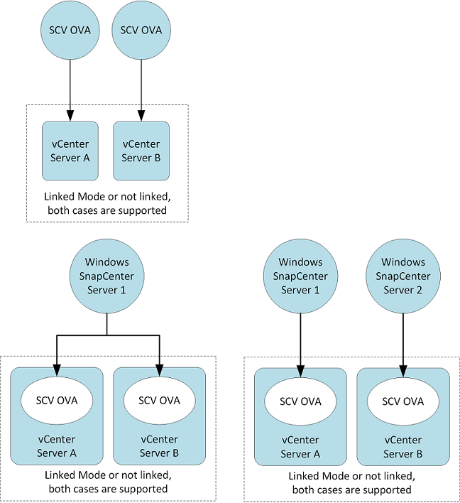

要求變更文件
要求變更文件 編輯此頁面
編輯此頁面 瞭解如何作出貢獻
瞭解如何作出貢獻部署規劃與需求
在部署虛擬應用裝置之前、您應該先瞭解部署需求。下列五個表格列出部署需求。
主機需求
開始部署SnapCenter VMware vSphere的VMware vSphere版的VMware vCenter外掛程式之前、您應該先熟悉主機需求。
-
您必須將SnapCenter VMware的VMware插件部署為Linux VM。
無論您是使用外掛程式來保護Windows系統或Linux系統上的資料、VMware的VMware插件都會部署為Linux VM。SnapCenter
-
您應該在SnapCenter vCenter Server上部署VMware vCenter外掛程式。
備份排程會在SnapCenter 部署VMware vCenter外掛程式的時區執行。vCenter會報告vCenter所在時區內的資料。因此、如果SnapCenter VMware vCenter外掛程式和vCenter位於不同的時區、SnapCenter 則VMware Plug-in儀表板中的資料可能與報告中的資料不同。
-
您不得將SnapCenter VMware vCenter外掛程式部署在名稱含有特殊字元的資料夾中。
資料夾名稱不應包含下列特殊字元：$!@#%^&()_+{}';.,*?<>|
-
您必須為SnapCenter 每個vCenter Server部署及登錄個別且獨特的VMware外掛程式執行個體。
-
每個vCenter Server、無論是否處於連結模式、都必須與SnapCenter 個別的VMware外掛程式執行個體配對。
-
每個SnapCenter VMware vCenter外掛程式執行個體都必須部署為獨立的Linux VM。
例如、如果您想要從六個vCenter Server執行備份、則必須在SnapCenter 六個主機上部署VMware vCenter外掛程式、而且每個vCenter Server都必須與SnapCenter 獨特的VMware插件執行個體配對。
-
-
若要保護VVol VM（VMware vVol資料儲存區上的VM）、您必須先部署ONTAP VMware vSphere的VMware Infrastructure。《VMware工具》可在VMware Web用戶端上、針對VMware上的vVols進行配置及配置儲存。ONTAP ONTAP
如需詳細資訊、請參閱 "VMware vSphere適用的VMware工具ONTAP"
如需ONTAP 有關支援版本的更新資訊、請參閱 "NetApp 互通性對照表工具"。
-
由於支援Storage VMotion的虛擬機器受到限制、因此VMware的VMware插件對共享的PCI或PCIe裝置（例如NVIDIA Grid GPU）提供有限的支援。SnapCenter如需詳細資訊、請參閱廠商的VMware部署指南文件。
-
支援項目：
建立資源群組
建立備份而不需VM一致性
當所有VMDK都位於NFS資料存放區、而且外掛程式不需要使用Storage VMotion時、即可還原完整的VM
連接和拆離VMDK
掛載及卸載資料存放區
客體檔案還原
-
不支援的項目：
以VM一致性建立備份
當一個或多個VMDK位於VMFS資料存放區時、還原完整的VM。
-
-
如需SnapCenter VMware插件限制的詳細清單、請參閱 "VMware vSphere的版次說明SnapCenter"。
授權需求
| 您必須提供以下項目的授權… | 授權需求 |
|---|---|
ONTAP |
其中一項：SnapMirror或SnapVault SnapMirror（無論關係類型為何、均可提供二線資料保護） |
其他產品 |
vSphere Standard、Enterprise或Enterprise Plus需要vSphere授權、才能執行使用Storage VMotion的還原作業。vSphere Essentials或Essentials Plus授權不含Storage VMotion。 |
主要目的地 |
VMware vCenter Standard：執行以應用程式為基礎的VMware支援所需：僅適用於FlexClone的VMware VM和資料存放區執行還原作業所需：僅用於在VMware VM和資料存放區上掛載和附加作業SnapCenter SnapRestore |
次要目的地 |
VMware FlexClone：用於容錯移轉作業、提供應用程式型保護：僅用於在VMware VM和資料存放區上掛載和附加作業SnapCenter |
軟體支援
| 項目 | 支援的版本 |
|---|---|
vCenter vSphere |
HTML5用戶端：6.5U2/U3、6.7x、7.0、7.0U1、7.0U2、 不支援7.0U3 Flex用戶端。 |
ESXi |
6.5U2及更新版本 |
IP位址 |
IPV4、IPV6 |
VMware TLS |
1.2 |
支援TLS SnapCenter |
TLSv1.1及更新版本SnapCenter 透過SnapCenter VMDK資料保護作業、使用此功能與應用程式的VMware插件進行通訊。 |
適用於陣列整合的VMware應用程式vStorage API（VAAI） |
VMware vSphere的VMware vSphere外掛程式使用此功能來改善還原作業的效能。SnapCenter它也能改善NFS環境的效能。 |
VMware適用的VMware工具ONTAP |
VMware vSphere的VMware vSphere外掛程式使用此功能來管理VVol資料存放區（VMware虛擬磁碟區）SnapCenter 。如需支援的版本、請參閱NetApp互通性對照表工具。 |
如需支援版本的最新資訊、請參閱 "NetApp 互通性對照表工具"。
空間與規模需求
| 項目 | 需求 |
|---|---|
作業系統 |
Linux |
最小CPU數 |
4核心 |
最低RAM |
最低：建議使用12 GB：16 GB |
適用於VMware vSphere、記錄檔和MySQL資料庫的VMware vCenter外掛程式最小硬碟空間SnapCenter |
100 GB |
連線與連接埠需求
| 連接埠類型 | 預先設定的連接埠 |
|---|---|
VMware vSphere連接埠適用的外掛程式SnapCenter |
8144（HTTPS）、雙向連接埠用於從VMware vSphere Web用戶端和SnapCenter 從VMware Server進行通訊。8080雙向此連接埠用於管理虛擬應用裝置。 附註：您無法修改連接埠組態。 |
VMware vSphere vCenter Server連接埠 |
如果您要保護VVol VM、則必須使用連接埠443。 |
儲存叢集或儲存VM連接埠 |
443（HTTPS）、雙向80（HTTP）、雙向連接埠用於虛擬應用裝置與儲存VM或包含儲存VM的叢集之間的通訊。 |
支援的組態
每個外掛程式執行個體僅支援一個vCenter Server。支援處於連結模式的vCenter。多個外掛程式執行個體可支援下SnapCenter 圖所示的同一個Same Server。

需要RBAC權限
vCenter系統管理員帳戶必須具備所需的vCenter權限、如下表所列。
| 若要執行此作業… | 您必須擁有這些vCenter權限… |
|---|---|
在SnapCenter vCenter中部署並註冊VMware vSphere的VMware vCenter外掛程式 |
副檔名：登錄副檔名 |
升級或移除SnapCenter VMware vSphere的VMware vCenter外掛程式 |
擴充
|
允許在SnapCenter VMware vSphere中登錄的vCenter認證使用者帳戶、驗證使用者對SnapCenter VMware vSphere的VMware vCenter外掛程式存取權 |
sessions.validate.session |
允許使用者存取SnapCenter VMware vSphere的VMware vCenter外掛程式 |
選擇控制閥管理員選擇控制閥備份選擇控制閥客體檔案還原選擇控制閥還原檢視必須在vCenter根目錄指派權限。 |
AutoSupport
VMware vSphere的《支援VMware vSphere的支援程式》提供最少的資訊、可用來追蹤其使用狀況、包括外掛程式URL。SnapCenter包含由畫面顯示的已安裝外掛程式表格。AutoSupport AutoSupport